Java, Maven and Tomcat
Build
Java
applications with
Maven
and deploy packaged web applications to
Apache Tomcat
.
🎯 Objective
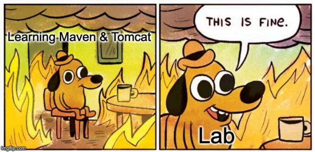
This lab has the following goals:
-
Set up an
EC2instance onAWS.-
Install
Java21,Maven(Java Build Tool) andTomcat(Web Server) with basic configurations. -
Generate your first web application using Maven, then build the project to produce
WARfile, and have Tomcat server to host the web application from that WAR file.
-
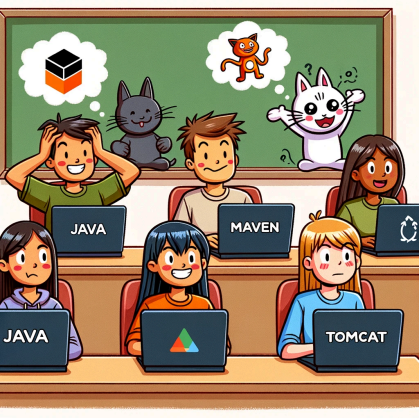
🧭 Java, Maven, Tomcat, and EC2 architecture
This week, we will build the workflow shown below:
Architecture checkpoint: Trace one source-code change to the browser. Which component compiles it, which artifact carries it, and which component serves it?
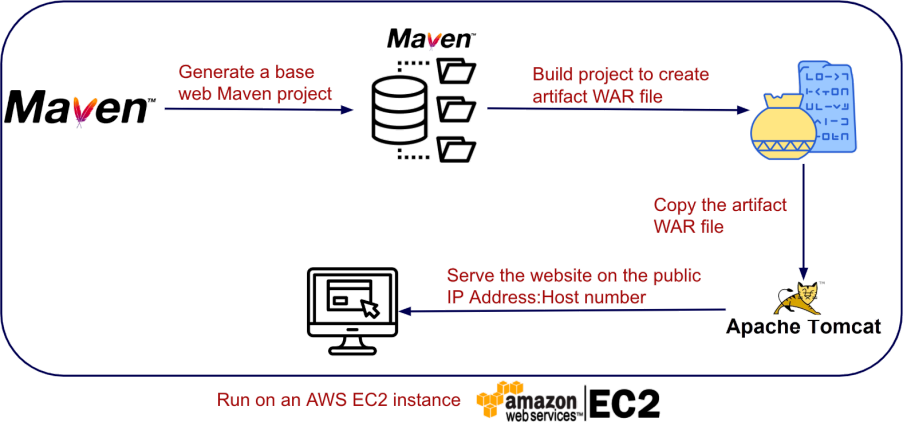
The workflow has these main steps:
-
Set up a Linux
EC2Instance.-
SSHto the EC2 instance. -
Install
Java. -
Install
Maven. -
Install
Tomcat. -
Use Maven to generate a web project template.
-
Use Maven to build the project to produce a
WARfile. -
Copy that WAR file to Tomcat’s hosting folder.
-
Access the website on Tomcat server on the public IP address via
port 8080.
-
☁️ Create the EC2 instance
-
First, let's open the
AWSconsole:
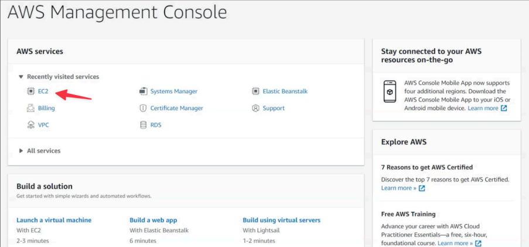
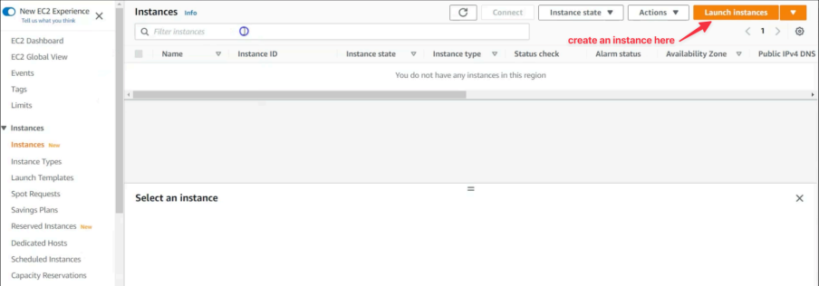
-
Here are the settings of our new
EC2Linux instance:
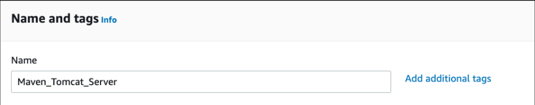
-
Choosing the default AMI of AWS is the best to run on EC2 instances. Indeed, AMI of AWS is based on a version of CentOS:
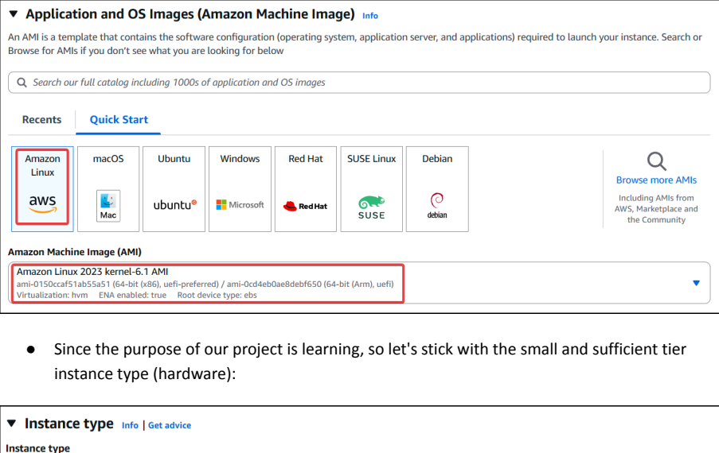
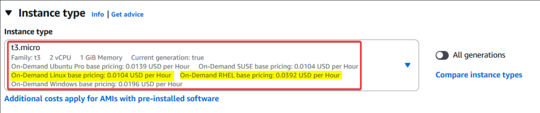
-
Since the purpose of our project is learning, so let's stick with the small and sufficient tier instance type (hardware):
-
Create a new key pair to securely
SSHto your EC2 instance:
-
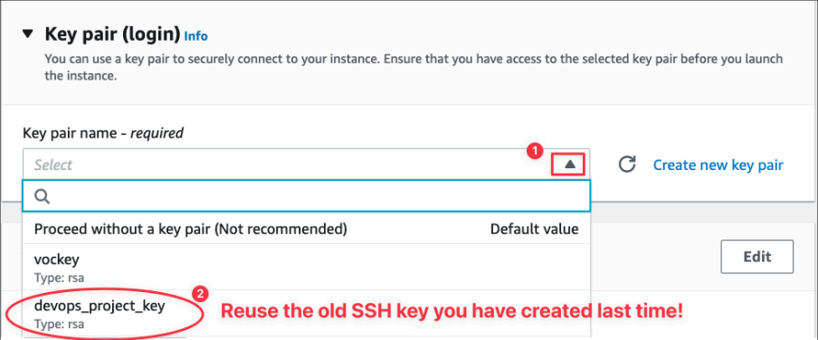
-
We need to create a security group (firewall rules) to secure and protect our VMs:
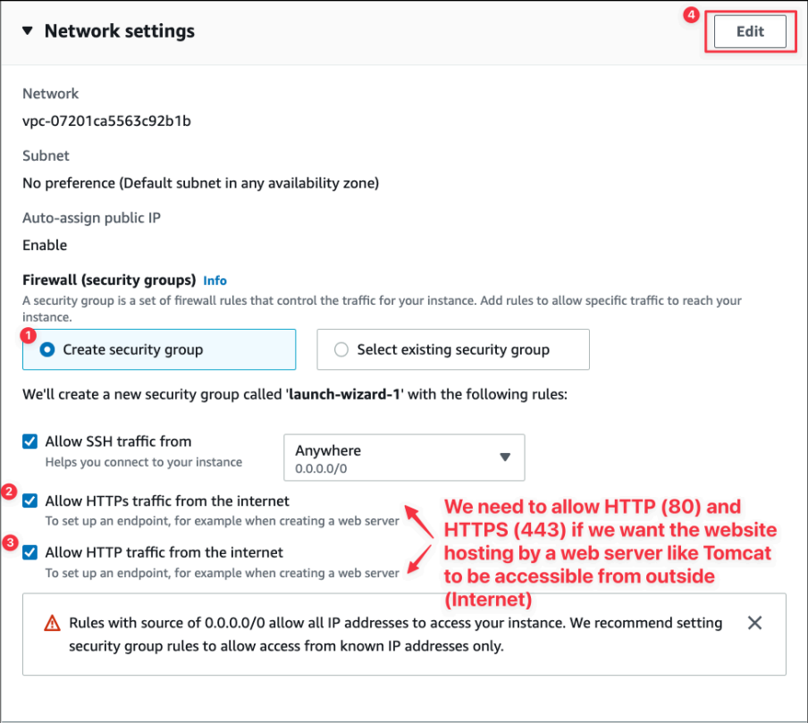
-
There is one more port to be open for
TomcatServer which is 8080 so please click on the button “Add security group rule”:
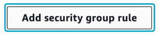
-
The security group should allow the following inbound ports:
-
port 22: ssh -
port 80: http -
port 443: https -
port 8080: tomcat
-
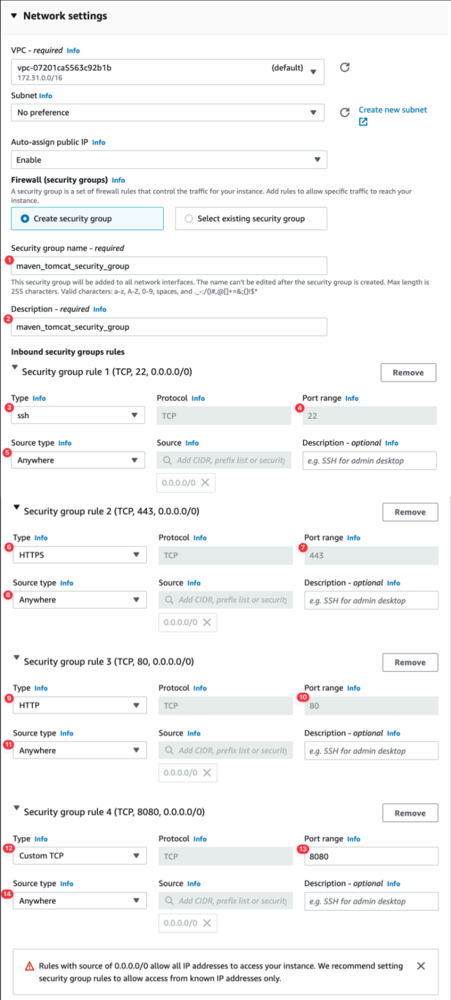
-
The default 8 GB for storage is plenty enough for our server:
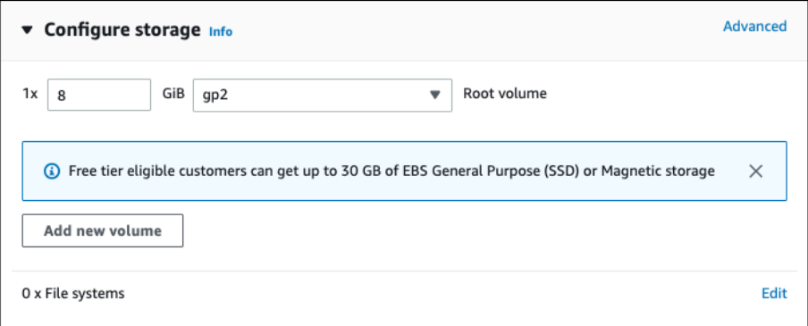
-
After that, review the configuration settings and launch the instance:
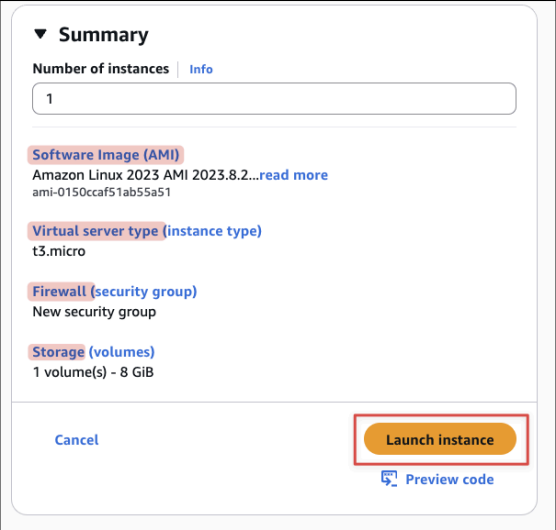
-
AWS will announce that it has started to create a new EC2 instance based on your configuration:
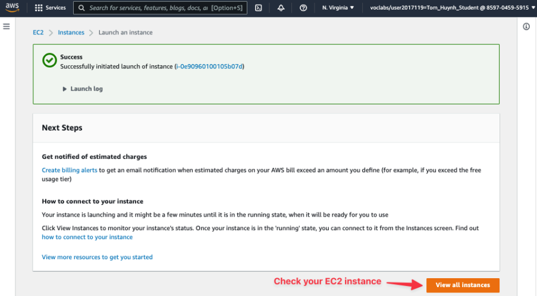
-
In the EC2 dashboard you should see the
Jenkin_ServerEC2 running:
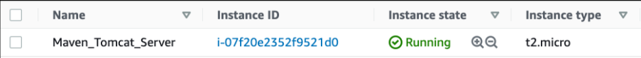
-
Alright, like in the previous lab, please SSH to your EC2 instance:
-
cd to the location of your SSH key in your laptop
-
find out what is the public ID address or public domain name of your EC2 instance
-
run the command to SSH, like so:
-
ssh -i "devops_project_key.pem" ec2-user@[your-public-dns-of-your-EC2-instance]-
After that, you should SSH successfully to the remote EC2 Server like below:
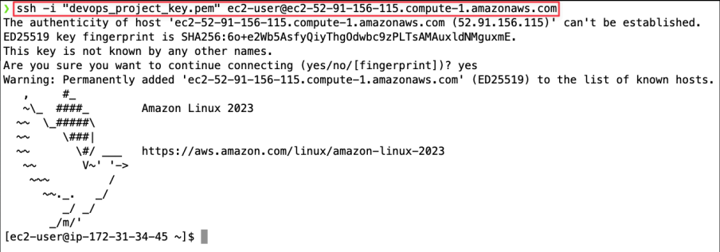
☕ Install Java
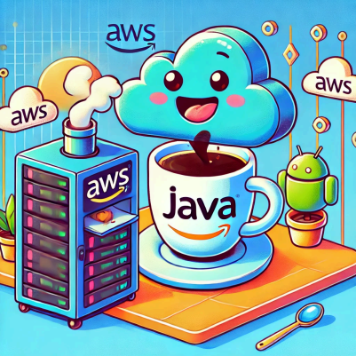
-
To keep things simple without dealing with permission, let’s login as a root user and change our current directory to /root:
sudo su -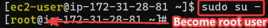
-
You are now the root user and have unrestricted system privileges. You can check your current directory, which should tell you that you are at root directory:
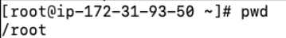
-
Second, we need to install
JavaJDK17 ofAWSCorretto:
yum install java-21-amazon-corretto-
Explanation:
-
yum: A package manager used in Amazon Linux, CentOS, and RHEL-based distributions to install, update or remove packages and dependencies.
-
java-21-amazon-corretto: The name of the package for Amazon Corretto 21, which is an implementation of Java 21. Amazon Corretto is developed and maintained by Amazon. Also, Java 21 is a Long-Term Support (LTS) version of Java, ensuring stability and support for production use.
-
-
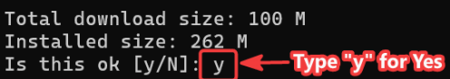
-
After installation, verify that Java 21 is active:
java -version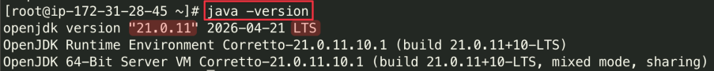
📦 Install Maven
The overview of steps:
-
Setup
Maven-
Setup Environment Variables
-
JAVA_HOME,M2,M2_HOME
-
-
Configure Maven and
Java
-
-
Let's visit the website
Apache MavenDownload to look for the binary distribution for easy installation instructions: https://maven.apache.org/download.cgi . Keep in mind that the Maven version can be different from the screenshot but please use the latest one in the website:
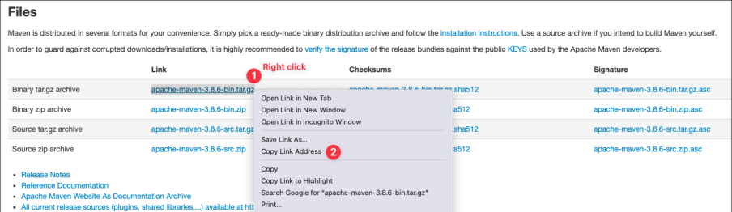
-
First, let's change the current directory to “/opt" which is reserved for the installation of add-on application software packages." This is optional as we want to keep our installation files neat in that folder.
cd /opt-
You can double check the current directory again to confirm you are in the /opt folder.
pwd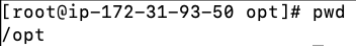
-
Ok, let’s download the binary distribution of Maven using the wget command:
-
Note: the example url below here can be different due to the different version number of maven on the website! Please change “x.x” accordingly!
-
wget https://dlcdn.apache.org/maven/maven-3/3.x.x/binaries/apache-maven-3.x.x-bin.tar.gz
You should see the file “
apache-maven-3.x.x-bin.tar.gz
” downloaded/saved in your current directory like so:
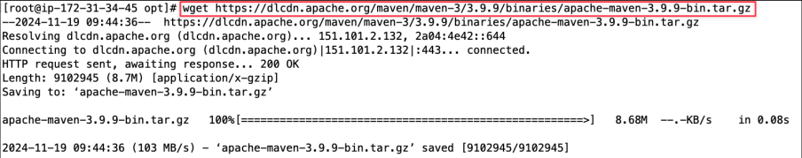
-
To extract the compressed file “
apache-maven-3.x.x-bin.tar.gz”, we need to use the command (note that your version number could be different so just change the numbers accordingly):
tar -xvzf apache-maven-3.x.x-bin.tar.gz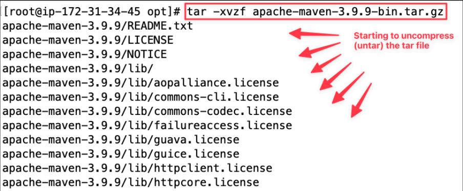
-
The command tar -xvzf is used in Unix and Unix-like operating systems to extract files from a tar archive. Let's break down the command:
-
tar: This is the main command used for creating and manipulating archive files in Unix and Unix-like systems. tar stands for "tape archive", a legacy name from when files were backed up to tape drives.-
-x: This option tells tar to extract files from an archive. Without this option, tar could be used for creating archives instead. -
-v: This is the "verbose" option. It tells tar to list the names of the files as they are being extracted. This is useful for monitoring the progress of extraction. -
-z: This option tells tar to uncompress the archive using gzip. The gzip utility is commonly used to compress files in Unix-like systems, and it usually results in files ending with the.gzextension. -
-f: This option tells tar that the next argument will be the name of the archive file to work with. It allows tar to know which file you want to extract or create.
-
-
-
So see if our extracted folder, we can use the classic command show directory ls:
ls -la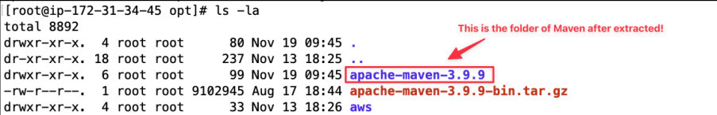
-
Let’s rename this folder with a long name to be shorter to “maven” to keep it simple:
-
Note: your maven version number could be different from this below example. Please change it accordingly!
-
mv apache-maven-3.x.x maven-
Run
lsagain to verify that the folder was renamed:
ls -la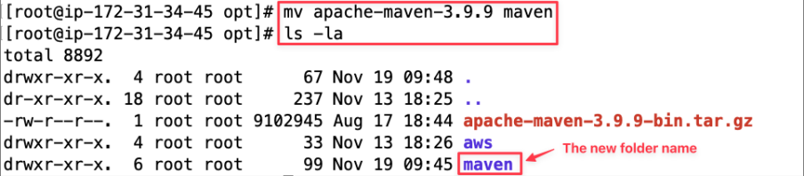
-
The executable maven file should be in ./maven/bin/mvn so you can test it out by trying:
./maven/bin/mvn -v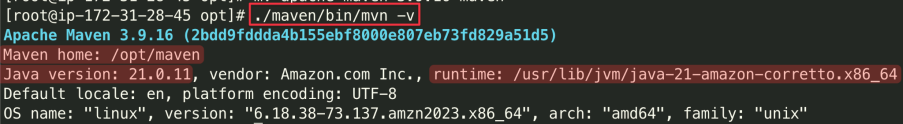
However, if we just run the command mvn only, it doesn't work as we need to full path “
/opt/maven/bin/mvn
” so we need to set up a symbolic link to from the root bin to that mvn file. Thus, it will make mvn executable from anywhere.
-
Let's set up some environment variables for Maven.
-
JAVA_HOME: Points to the installation directory of the Java Development Kit (JDK), allowing other applications like Maven andTomcatto find and use it. -
M2: Defines the root installation directory for Apache Maven, which contains all of its core libraries and files. -
M2_HOME: Specifies the path to Maven's bin directory, which holds the mvn executable command.
-
-
To do that, let's find out where is the Java Home (location of
JVM):
find / -name jvm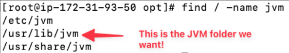
-
To double check that, let's see what inside that folder:
ls -la /usr/lib/jvm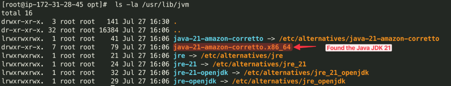
So our path to the Java JDK 21 inside the
EC2
is
/usr/lib/jvm/java-21-amazon-corretto.x86_64
Note: your version number of java 21 can be different from this guide so note this accordingly.
-
Now, set the environment variables for Maven:
-
Go back to the home of root user:
cd ~-
Confirm the current directory location again (/root):
pwd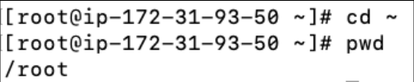
-
To set these environment variables for the root user, modify the
.bash_profilefile in the home of the root user, let's list all the files:
ls -la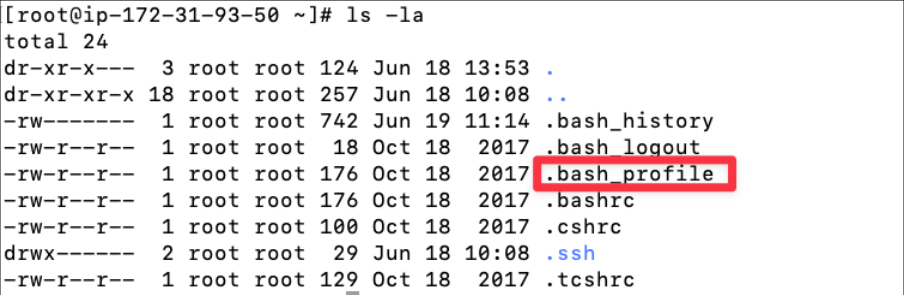
-
To edit this file, we need to use nano command:
nano .bash_profileAt first, the file looks like this:
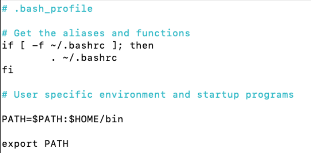
The environment variables are used by the application to know where to look for other resources the application might need:
-
JAVA_HOMEis used by many Java-based applications to define the place of Java Runtime Environment (JRE) installation.-
M2_HOMEdirectory which points to the top directory where MAVEN is "installed" (or unzipped). -
M2 directory specifies to the maven application (mvn) where to find the maven repositories that are needed.
-
-
So please modify it so it looks like this:
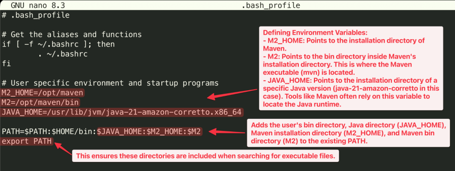
Here is the example of the
.bash_profile
:
# .bash_profile
# Get the aliases and functions
if [ -f ~/.bashrc ]; then
. ~/.bashrc
fi
# User-specific environment and startup programs
M2_HOME=/opt/maven
M2=$M2_HOME/bin
JAVA_HOME=/usr/lib/jvm/java-21-amazon-corretto.x86_64
PATH=$PATH:$HOME/bin:$JAVA_HOME/bin:$M2
export M2_HOME M2 JAVA_HOME PATHSo save file in nano:
Press Ctrl+X, then Y, then Enter to save the file under the same name.
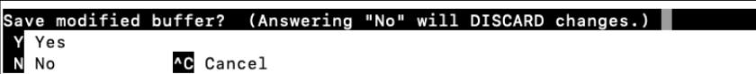
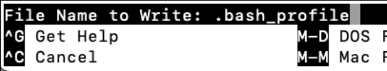
-
When you check the system paths then nothing has changed:
echo $PATH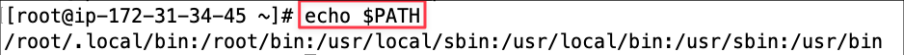
The current shell has not loaded the Maven and Java paths yet.
-
For the new
.bash_profileto be effective, we need to run the command:
source .bash_profile-
Double check if the new path environment variable has been changed, so it should look like this:
echo $PATH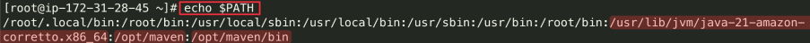
-
Now, we can call maven just using “mvn” like this instead of the long path name, yayyyy:
-
We now can call the command “mvn” without providing the full path to maven folder!
-
mvn -v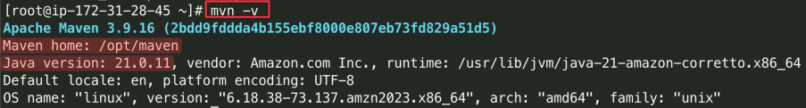
🐈 Install Tomcat
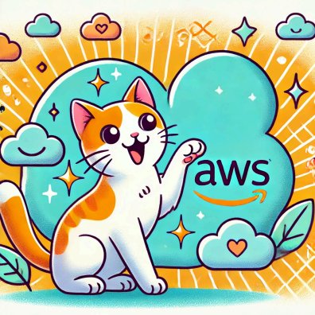
-
Let's visit the website
Apache TomcatDownload (Version 9) to look for the binary distribution for easy installation instructions: https://tomcat.apache.org/download-90.cgi
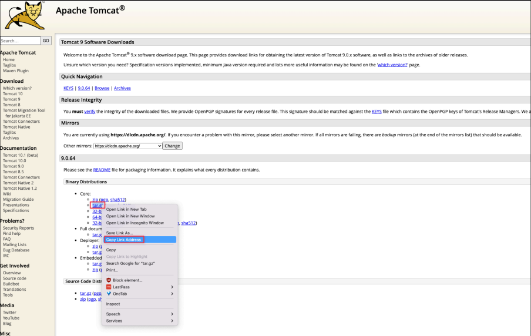
-
Like before, let's change the current directory to “/opt" which is reserved for the installation of add-on application software packages." This is optional as we want to keep our installation files neat in that folder.
cd /opt-
You can double check the current directory again to confirm you are in the /opt folder.
pwd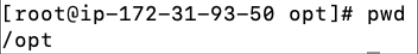
-
Ok, let’s download the binary distribution of
Tomcatusing the wget command:-
Note: your number version of Tomcat could be different from this below example. Please change “x.xx” in the url accordingly!
-
wget https://dlcdn.apache.org/tomcat/tomcat-9/v9.x.xx/bin/apache-tomcat-9.x.xx.tar.gz
You should see the file “
apache-tomcat-9.x.xx.tar.gz
” downloaded/saved in your current directory like so:
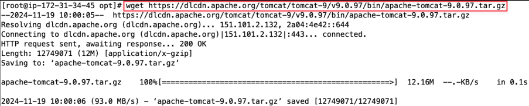
-
To extract the compressed file “
apache-maven-3.x.x-bin.tar.gz”, we need to use the command (note that your version number could be different so just change the numbers accordingly):
tar -xvzf apache-tomcat-9.x.xx.tar.gz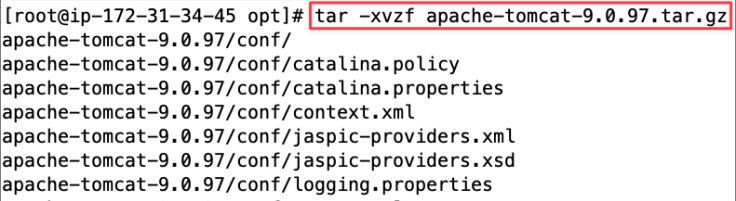
-
So see if our extracted folder, we can use the classic command show directory ls:
ls -la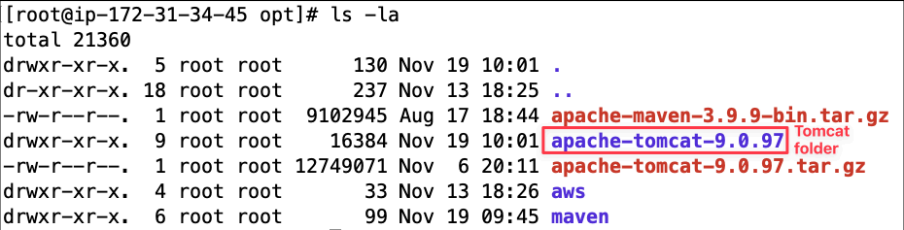
-
Let’s rename this folder with a long name to be shorter to “tomcat” to keep it simple:
-
Note: your tomcat version could be different from this below example. Please change it accordingly!
-
mv apache-tomcat-9.x.xx tomcat-
Run
lsagain to verify that the folder was renamed:
ls -la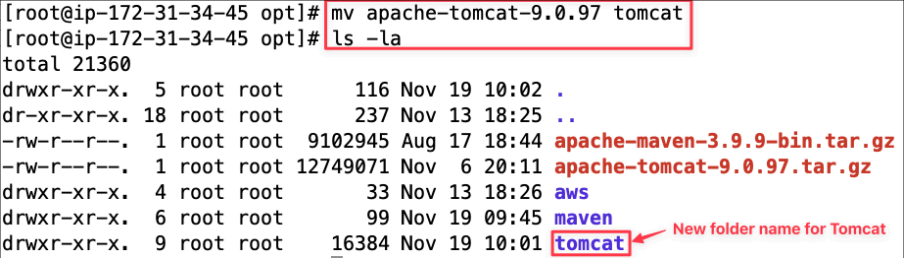
-
Let’s change the current directory to be inside the Tomcat executables files:
cd tomcat/bin-
Let’s list inside all executables files of Tomcat:
ls -la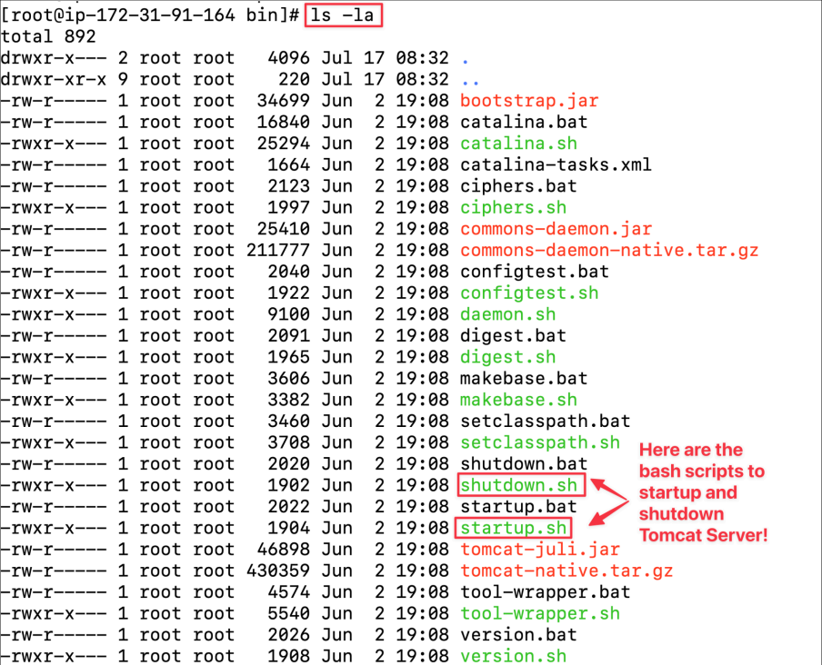
-
You can start the Tomcat server by running the
startup.sh:
./startup.sh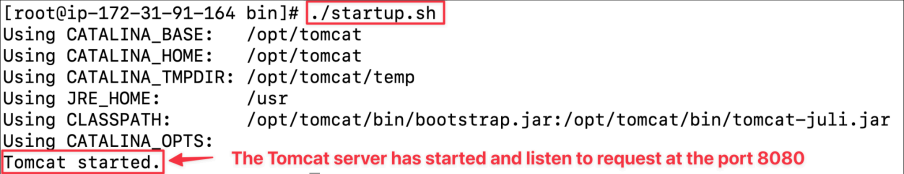
So now the Tomcat server has started and been listening to the incoming request at
the
public
IP
address
of
the
EC2
instance
via the
port
8080
(which is the default port of Tomcat)
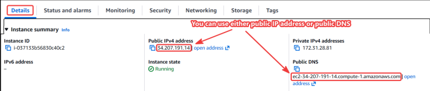
-
You can check out Tomcat Dashboard Web UI by typing the URL in the browser, make sure to use the URL “ http://public_ip_adress : 8080 ” for 8080 is the port number of Tomcat:
-
The highlighted arrows in the Tomcat dashboard are links to various administrative pages in Apache Tomcat:
-
Server Status: Provides an overview of the current state of the Tomcat server. This includes information about active threads, memory usage, request processing time, and other server performance metrics.
-
Manager App: a web-based tool for managing web applications deployed on the Tomcat server:
-
Deploy, undeploy, or redeploy applications.
-
View deployed application information.
-
Start and stop applications.
-
View session details for each application.
-
-
Host Manager : used for managing virtual hosts (domains/subdomains) on the Tomcat server to add or remove virtual hosts as well as view details about configured hosts.
-
-
However, when you try to access Manager App of Tomcat, your access will be denied :
This happens because by default Tomcat only allows the same machine (in our case, EC2 instance) where Tomcat is running to access its dashboard. However, we want to access Tomcat from outside using our browser on our own computer so we need to edit the
context.xml
file like it suggests.
IMPORTANT NOTE: if you would like to have a minimal Tomcat setup to serve your website without having a need to access other admin dashboard or helpful resources/pages of Tomcat, then you can skip the instructions of the section“Configure Tomcat users and access" and continue for the section section“Create Tomcat startup shortcuts" to the end.
🔐 Optional: Configure Tomcat users and access
-
Let’s find where is the
context.xmlinTomcatdirectory:
find /opt/tomcat/ -name context.xml-
We started to edit the first
context.xmlusing nano:
nano /opt/tomcat/webapps/host-manager/META-INF/context.xml[Alternative] Another option is instead of commenting them out, you can remove those lines.
-
We move on to edit the second
context.xmlusing nano:
nano /opt/tomcat/webapps/manager/META-INF/context.xmlFor the same logic, we comment out the same line for this file also!
-
From Tomcat’s
bindirectory, stop and restart Tomcat so the new settings take effect:
./shutdown.sh./startup.sh-
You can check out Tomcat Dashboard Web UI by typing the URL in the browser again:
-
It will ask for username and passwords:
-
Alright, we need to add a few users with the right permissions to use Tomcat. Indeed, we can define them in the file
tomcat-users.xml(/opt/tomcat/conf/tomcat-users.xml). Let’s edit that file:
nano /opt/tomcat/conf/tomcat-users.xml-
To keep it simple for this lab, we only created a user “admin" with the password “s3cret" who got all roles to play around with Tomcat:
<role rolename="admin-gui"/>
<role rolename="manager-gui"/>
<role rolename="manager-script"/>
<role rolename="manager-jmx"/>
<role rolename="manager-status"/>
<user username=" admin " password=" s3cret " roles="admin-gui,manager-gui, manager-script,
manager-jmx, manager-status"/>-
Now, shutdown and startup Tomcat again and check out the Tomcat Manager Web UI again:
-
Now, you can log in these pages now with the new user “admin" with the password “s3cret”:
-
There are some default web applications of Tomcat server for you to try, which are highlighted in the above screenshot:
-
/docs : This application provides comprehensive documentation and guides for Tomcat, including configuration details, examples, and operational instructions.
-
/examples : This is a collection of servlets and JSPs that demonstrate various features of Tomcat and provide a practical reference for developers.
-
/host-manager: This web app offers a user interface for managing virtual hosts in a Tomcat server environment, allowing administrators to add, remove, and configure hosts.
-
/manager: It's an administrative tool that provides a user interface for managing the web applications deployed on the server, including deploying, undeploying, starting, stopping, and reloading applications.
-
-
However, you might not be able to access /docs or /examples as you need to comment out the IP address restriction in these two files respectively, which is up to you:
/opt/tomcat/webapps/docs/META-INF/context.xmlor/opt/tomcat/webapps/examples/META-INF/context.xml
🔗 Create Tomcat startup shortcuts
-
So far, every time, we shutdown and startup
Tomcat, we need to use the relative path or absolute path of the scripts. Let's create symbolic links of these scripts in the system bin directory so we can just call “tomcatup” and “tomcatdown":
ln -s /opt/tomcat/bin/startup.sh /usr/local/bin/tomcatupln -s /opt/tomcat/bin/shutdown.sh /usr/local/bin/tomcatdown
Now, when you run “tomcatup", it will try to find the executable files in the
/usr/local/bin
and found the symbolic link which points to “
/opt/tomcat/bin/startup.sh
” then run that script! Similar thing happens to “tomcatdown"! Yayyy!
-
You can try it!
tomcatdowntomcatupNow, our Tomcat is working and ready to serve any web application in the webapps directory!
🏗️ Generate a Maven web application
Let's generate a very simple “Hello World"
Java
JSP
application using
Maven
!
-
Let’s go back to the home directory to keep our project directory organised there:
cd ~-
We can generate a Maven web template project directories using one line of archetype (Maven project templating toolkit):
-
-DgroupId (Group ID): Group or organization that the project belongs to. Often expressed as an inverted domain name.
-
-DartifactId (Artifact ID): Name to be given to the project’s library artifact (for example, the name of its
JARorWARfile). -
-DarchetypeArtifactId (the type of archetype): “
maven-archetype-webapp” is an archetype to generate a sample Maven Webapp project.
-
mvn archetype:generate -DgroupId=vn.edu.rmit -DartifactId=helloWorld -DarchetypeArtifactId=maven-archetype-webapp -DinteractiveMode=false-
Maven creates a project directory whose name matches the
artifactId:
-
The whole directory structure of this project looks like this:
helloWorld
├── helloWorld/pom.xml
└── helloWorld/src
└── helloWorld/src/main
├── helloWorld/src/main/resources
└── helloWorld/src/main/webapp
├── helloWorld/src/main/webapp/index.jsp
└── helloWorld/src/main/webapp/WEB-INF
└── helloWorld/src/main/webapp/WEB-INF/web.xml-
Try to explore what inside this project:
We can see that there is a “
pom.xml
” file which is at the top level of this project directory!
-
The homepage web page is at
src/main/webapp/index.jsp, so let’s modify it:
📦 Build the web application with Maven
-
Make sure you cd to the root of the maven project first (where the
pom.xmlis) -
The package goal will compile your
Javacode, run any tests, and finish by packaging the code up in aWARfile within the target directory. Let’s compile and build the project to produce a WAR file :Build checkpoint: If
mvn packagefails while running tests, should a WAR file be copied to Tomcat? What evidence should an automated deployment check before continuing?
mvn package🚀 Deploy the WAR file to Tomcat
-
Nicely done! Let’s copy this
helloWorld.warinside the webapps ofTomcat!
cp /root/helloWorld/target/helloWorld.war /opt/tomcat/webapps/-
The website should be available at the URL:
ec2_public_ip_address:8080/helloWorld/. You can check your web application in the glorious form:
-
Check out the Tomcat Manager Web UI again here to access the website:

-
Check your web application in the glorious form:
Now, whenever you want to modify something of your web application, you follow the same process of modifying the
JSP
file, build the project using
Maven
and copy that
WAR
file into the webapps directory of Tomcat.
That’s a pretty long and boring process! However, we can speed up this process later on in other labs using automation tools like Jenkins! Stay tuned!
Important Note for the future assignment or in-class tests:
-
To set up a minimal Tomcat server just to serve your website, then you can skip all the steps in the section “Setup Tomcat users and remove local IP restrictions” for commenting out or removing the IP address restriction in
context.xmlfiles and the steps of creating tomcat users. -
In fact, you can setup Tomcat server to be shown its homepage on the URL at public IP address via the
port 8080then you can copy the WAR package file into the/opt/tomcat/webapps/then the website can be accessed at URL: Public IP address:8080/the_website_name.
Hopefully, this lab has prepared you for what you need to do in the future assignments!
🧪 Challenge overview
Here are several challenges that build upon the tutorial. These challenges are designed to deepen your understanding of
Java
,
Maven
,
Tomcat
, and
AWS
EC2
, as well as introduce some essential DevOps practices.
🧪 Challenge 1: Display dynamic content
Objective
: Enhance your
Maven
-generated web application to display dynamic content using
JSP
(JavaServer Pages).
Guidance:
-
Modify the JSP File:
-
Locate the
index.jspfile in your Maven project'ssrc/main/webappdirectory. -
Update the file to include dynamic content, such as displaying the current server date and time. Hint : Use JSP scripting elements to embed
Javacode within your HTML. Research how to use expressions or scriptlets in JSP to output dynamic data.
-
-
Rebuild the Project:
-
Use Maven to rebuild your project so that the changes in your JSP file are compiled into the new
WARfile. Tip : Ensure you're in your project's root directory when running Maven commands.
-
-
Redeploy the Application:
-
Deploy the newly built WAR file to your
Tomcatserver's webapps directory. Hint : You may need to stop and start Tomcat to redeploy the application properly.
-
-
Verify the Changes:
-
Access your web application in a browser using your
EC2instance's public IP address. -
Confirm that the page now displays the dynamic content as intended.
-
🧪 Challenge 2: Run Tomcat on port 80
Objective
: Modify
Tomcat
's configuration to listen on
port 80
, allowing users to access your web application without specifying a port number.
Guidance :
-
Edit Tomcat Configuration:
-
Locate the
server.xmlfile in the conf directory of your Tomcat installation (e.g.,/opt/tomcat/conf/server.xml). -
Open the file for editing and find the
<Connector>element that defines the HTTP connector. Hint : Look for a line that specifies port="8080".
-
-
Change the Port Number:
-
Modify the port attribute of the HTTP
<Connector>element from 8080 to 80. Tip: Be cautious when editing XML files to maintain proper syntax.
-
-
Update
AWSSecurity Group:-
Ensure that your
EC2instance's security group allows inbound traffic onport 80. Tip : You might have already configured this when setting up your instance, but double-check to confirm.
-
-
Restart Tomcat:
-
Restart the Tomcat server to apply the configuration changes.
-
-
Verify the Configuration:
-
Access your application using http://your-ec2-ip/helloWorld/ without specifying a port.
-
Confirm that the application loads correctly on
port 80.
-
🧪 Challenge 3: Automate deployment with Bash
Objective
: Create a shell script to automate the build and deployment process of your
Maven
web application to
Tomcat
.
Guidance:
-
Create a Deployment Script:
-
In your home directory or project directory, create a new shell script file (e.g.,
deploy.sh). -
The script should automate the steps of cleaning the project, building it, and deploying it to Tomcat. Hint : Think about the commands you run manually to perform these tasks and include them in the script.
Failure-handling checkpoint: Which build, copy, or restart steps must stop the script when they fail? Why could continuing after an earlier failure make the deployed application less reliable?
-
-
Make the Script Executable:
-
Modify the script's permissions to make it executable. Tip : Use the chmod command to change file permissions.
-
-
Incorporate Deployment Steps:
-
Include commands in the script to:
-
Navigate to your project's directory.
-
Run Maven commands to clean and package your application.
-
Copy the generated
WARfile to Tomcat's webapps directory. -
Restart the Tomcat server to deploy the new version.
-
-
-
Test the Script:
-
Make a change to your web application's content (e.g., update
index.jsp). -
Run the deployment script to see if it automates the process successfully.
-
-
Verify Deployment:
-
Access your application in the browser to ensure the latest changes are reflected.
-
🧪 Challenge 4: Run Tomcat as a service
Objective
: Configure
Tomcat
to start automatically when your
EC2
instance boots by setting it up as a system service.
Guidance :
There are several ways to set up Tomcat as a service to start automatically on your EC2 instance:
-
Systemd Service Unit (Recommended for modern Linux distributions):
-
Create a
systemdservice file (e.g.,/etc/systemd/system/tomcat.service). -
Define service parameters, including environment variables and execution commands.
-
Enable the service with
systemctlto start on boot.
-
-
Cron Job with @reboot:
-
Add a cron job using the @reboot directive to start Tomcat when the system boots.
-
Example: @reboot /path/to/tomcat/bin/
startup.sh
-
🧪 Challenge 5: Resolve “mvn: command not found”
Objective:
Investigate why the
mvn
command is not recognized in certain contexts and resolve the issue for all users on the
EC2
instance. The
mvn
command works only when using
sudo
su
-
but fails with
sudo
su
or as the
ec2-user.
This inconsistency likely arises from environment variable configuration or PATH settings. Your challenge is to understand and fix this issue.
Guidance:
-
Replicate the Problem:
-
Log in to the EC2 instance as the ec2-user.
-
Try running the mvn
-vcommand. Observe and note the error message. -
Use sudo su and try running the same command. Note the result.
-
Use sudo su - and confirm that the command works in this context.
-
-
Analyze the Environment Variables:
-
Compare the environment variables available in each context
-
Run env as the ec2-user.
-
Run env after using sudo su.
-
Run env after using sudo su -.
-
Identify differences, particularly in the PATH variable.
Hint: Research the difference between a "login shell" and a "non-login shell" and how environment variables are loaded in each.
Plan a Solution:
-
How can you ensure the necessary environment variables (e.g.,
JAVA_HOME,M2_HOME, and PATH ) are available for all users, regardless of the context? -
Would setting environment variables globally in a shared profile file (e.g.,
/etc/profileor/etc/profile.d/) be a good approach? Why or why not?
Hint
1:
Look into how system-wide environment variables are managed in Linux and the role of files like
.bash_profile
,
.bashrc
,
/etc/profile
, and
/etc/profile.d/
.
Hint
2:
To make
sudo
su
works without “-”, you can just only focus on
/root/.bashrc
to keep it simple. Can you try to duplicate what you have done for
/root/.bash_profile
to it and see what will happen
(Recommended
solution)
Hint
3:
To make mvn works for all users including ec2-user then it will be more complicated to involve
/etc/profile
or
/etc/profile.d
(You can ignore this solution for now but it is helpful to know the purpose of these files for now)
Implement and Test:
-
After updating the environment variables, how can you verify the changes are effective?
-
What command can you use to reload environment variables without restarting the system?
Hint:
you can use the
mvn
-v
command to test.
🚀 Challenge 6: Automate the complete setup
Objective:
Write a bash script that automates all the steps from the tutorial to set up
Java
,
Maven
, and
Tomcat
on
a
new
AWS
EC2
instance.
The script should also generate a Maven web application, build it, and deploy it to Tomcat.
Guidance:
-
Outline the Steps:
-
Begin by listing all the tasks you performed manually in the tutorial.
-
Identify the commands and configurations needed for each step.
-
-
Automate System Preparation:
-
Automate system updates and installations of necessary packages like Java 21 (Amazon Corretto).
-
Ensure your script handles dependencies and checks for successful installations.
-
-
Set Environment Variables:
-
Include commands to set up environment variables for Java (
JAVA_HOME) and Maven (M2_HOME, M2). -
Make sure these variables are exported so that they are available to all users or the intended user.
-
-
Install and Configure Maven:
-
Automate the download and extraction of Maven .
-
Set up the necessary directory structures and permissions.
-
-
Install and Configure Tomcat:
-
Script the download, extraction, and setup of Tomcat .
-
Configure Tomcat settings as needed, such as ports and user access (if required).
-
Set up symbolic links or service files to manage Tomcat easily.
-
-
Generate and Build the Maven Project:
-
Use Maven commands within the script to generate a new web application using the appropriate archetype.
-
Automate any modifications to project files, such as editing the
index.jsp.
-
-
Deploy the Application to Tomcat:
-
Include commands to build the project and produce the
WARfile. -
Automate the deployment by copying the WAR file to Tomcat 's webapps directory.
-
Manage the Tomcat server by including start and stop commands within the script.
-
-
Handle Permissions and Ownership:
-
Ensure that the script accounts for file and directory permissions, especially when running commands with sudo .
-
Consider the user context in which the script will run.
-
-
Include Error Checking and Logging:
-
Add checks after critical commands to verify they completed successfully.
-
Optionally, include logging to a file for easier troubleshooting.
-
-
Test Your Script:
-
Run your script on a fresh EC2 instance to ensure it works from start to finish.
-
Make adjustments as necessary based on any errors or issues encountered.
-
The ultimate goal for us is to see the website available via the url: http://[public-ip-address-of-ec2]/[website-name]/ with the
port 80
-
Note: This exercise is an opportunity to practice automation and scripting skills, which are essential in DevOps. Focus on understanding how each command contributes to the overall setup and consider how automating these steps can improve efficiency and reduce the potential for errors.
🛟 Sample solutions for Challenges 1–5 (try them yourself first)
⚡ Challenge 1: Modify the Web Application to Display Dynamic Content
Objective:
Enhance the
Maven
-generated web application to display dynamic content using
JSP
.
-
Modify
index.jsp: Update theindex.jspfile to display the current server date and time.
<html>
<head>
<title>Dynamic Date and Time</title>
</head>
<body>
<h1>Hello, World!</h1>
<p>The current server date and time is: <%= new java.util.Date() %></p>
</body></html>-
Rebuild and Redeploy: Use Maven to rebuild the
WARfile and deploy it toTomcat.
mvn package
cp target/helloWorld.war /opt/tomcat/webapps/
tomcatdown && tomcatup-
Verify : Access the web application via the browser to ensure it displays the dynamic content.
🌐 Challenge 2: Configure Tomcat to Run on Port 80
Objective:
Modify
Tomcat
's configuration to listen on
port 80
, the default HTTP port.
-
Edit Server Configuration: Open the
server.xmlfile in Tomcat's conf directory.
nano /opt/tomcat/conf/server.xml-
Change Connector Port:
<Connector port="80" protocol="HTTP/1.1"
connectionTimeout="20000"
redirectPort="8443"
maxParameterCount="1000"
/>-
Update Security Group: In
AWS, modify theEC2instance's security group to allow inbound traffic onport 80(which we did already but if you have not done it, please do so)
-
Start the Tomcat server
-
Verify: Access your application via http://your-ec2-ip/helloWorld/ .
🤖 Challenge 3: Automate Deployment with a Shell Script
Objective: Create a shell script to automate the build and deployment process.
-
Create
deploy.shScript:
#!/bin/bash
cd ~/helloWorld
mvn clean package
cp target/helloWorld.war /opt/tomcat/webapps/
tomcatdown
tomcatup-
Make the Script Executable:
chmod +x deploy.sh-
Run the Script:
./deploy.sh-
Make some changes to the
index.jsthen run the deploy script to test it! -
Verify : Ensure that the application is redeployed successfully.
⚙️ Challenge 4: Set Up Tomcat as a Service
Objective:
Configure
Tomcat
to start automatically when the
EC2
instance boots.
-
Easy solution (using cron scheduler)
A very simple way to run a command at startup is to use a cron job with the special @reboot directive.
What is cron?
cron is a time-based job scheduler in Unix-like operating systems. You can tell it to run commands at specific times or, in this case, every time the system boots.
-
Edit the crontab for the root user. You need sudo because you're modifying a system-level schedule. The -e flag means "edit".
sudo crontab -eIf it's the first time you're running this, it might ask you to choose an editor. Just press Enter to select the default (usually nano).
-
Add the @reboot command. Go to the bottom of the file and add this single line:
@reboot /opt/tomcat/bin/startup.shThis line tells the cron scheduler: "Every time the system reboots, execute the Tomcat startup script."
-
In nano, press Ctrl+X, then Y to confirm, and Enter to save.
-
That's it! You're done. Now, when you reboot the EC2 instance, cron will automatically run the startup script for you.
-
Verify: Check the status of the Tomcat service.
sudo systemctl status tomcat-
Can you check if the HelloWorld website is available via the new public IP address of EC2: “ http://[your-public-ip-address-of-ec2]/helloWorld/ ”
However , this solution is easier but not better:
-
No Logging: s ystemd automatically captures all the output from your service into a central log (journalctl). With cron, the output is often emailed to the user or discarded, making troubleshooting harder.
-
No Automatic Restart: If Tomcat crashes for some reason,
systemdcan be configured to automatically restart it. cron will not; it only runs the command once at boot.
-
Hard solution (using SystemD Service)
For a lab, cron @reboot is a fantastic, simple shortcut. For a real server, systemd is far more robust and reliable.
The systemd method is powerful but requires creating a multi-section configuration file. Enough helping from me, could you do it? At least try, please!
🔍 Challenge 5: Investigate and Resolve "Command Not Found" for mvn
This problem is a classic Linux environment puzzle. The key is understanding how different shells load their configuration.
-
sudo su - (Login Shell): The - (or
--login) is the magic part. It tells su to start a login shell. A login shell simulates a fresh login. It sources system-wide profiles like/etc/profileand then the user's specific login profile, which for root is/root/.bash_profile. In the lab, you added theMavenpaths to/root/.bash_profile, which is why this works. -
sudo su (Non-Login Shell): Without the -, su starts a non-login shell. This type of shell does not read
/root/.bash_profile. It typically reads/root/.bashrc. Since the Maven path isn't in.bashrc, the mvn command is not found. -
ec2-user: The ec2-user is a completely different user with its own home directory (
/home/ec2-user/) and its own.bash_profile. You never modified this user's profile, so it has no knowledge of where Maven is installed.
-
Easy solution (Use a Symbolic Link):
The problem is that the mvn command is not in a directory listed in the PATH for all users. The "proper" solution fixes the PATH environment variable for everyone. A more direct, "brute force" solution is to simply place a link to the mvn command in a directory that is already in everyone's PATH.
The
/usr/local/bin
directory is the standard place for manually installed executables and is included in the default PATH for all users on almost every Linux system.
1a.Create a symbolic link (shortcut) to the mvn executable
sudo ln -s /opt/maven/bin/mvn /usr/local/bin/mvn
The ln -s command creates a symbolic link. The first argument is the real file (
/opt/maven/bin/mvn
), and the second argument is where you want the link to be (
/usr/local/bin/mvn
).
That's it! The change is immediate. You don't need to log out or reload anything.
Now, log in as ec2-user (or use sudo su) and run the command. It will work instantly.
# As ec2-user
mvn -v
# Or with sudo su
sudo su
mvn -v
The shell will look for mvn in the directories in its PATH, find it in
/usr/local/bin
, and follow the link to the actual executable.
However , this solution is easier but not better:
-
It's an Incomplete Fix : This only makes the mvn command itself available. It does not set the crucial
JAVA_HOMEorM2_HOMEenvironment variables for all users. Maven often relies onJAVA_HOMEto find theJavacompiler. While it might work in many cases (because it can often infer the Java location), it can fail in more complex scenarios or with other Java-based tools that strictly requireJAVA_HOMEto be set. -
Less Maintainable : If you install many tools this way, you'll have dozens of symbolic links in
/usr/local/bin. The/etc/profile.dapproach keeps the configuration for each tool contained in its own file, which is cleaner.
-
Hard solution (Use system-wide
/etc/profile.d/):
The best solution is to create a script in the
/etc/profile.d/
directory. Any file ending in
.sh
in this directory is automatically executed for every user upon login.
Enough helping from me, could you do it? At least try, please!